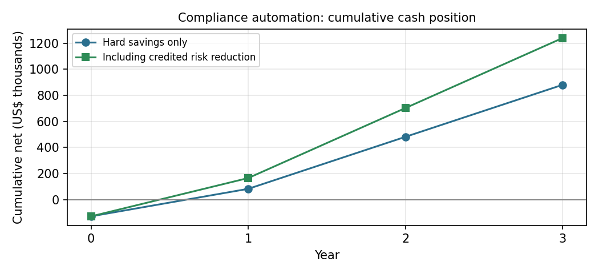

Care Access Navigator
Compliance 2 — Criterion 2: Compliance Automation Implementation
Enterprise compliance program for HRMC's multinational expansion: strategy, automation, process optimization, auditing, quantitative risk and performance
| Prepared by: | Akhila Chennamaneni, IAM & GRC Analyst (author) |
| Organization: | HealthLine Regional Medical Center (HRMC), Care Access Navigator (CAN) capstone |
| Course: | Compliance 2 (DAE 6-Month Cybersecurity, Cohort 2) |
| Rubric criterion: | Criterion 2: Compliance Automation Implementation |
| Environment: | CISO Assistant (live, read-only sync), Python workflow with AI triage, Monte Carlo risk model, capstone evidence |
| Date: | November 18, 2026 |
Scenario. HRMC is the fictional hospital used throughout my capstone (Care Access Navigator). For Compliance 2 it
expands into a multinational group: the US hospital network, clinics in Ireland and Germany, and a shared-services centre in
Hyderabad, India (10,800 staff). Everything measured (controls, audits, timings, logs, risks) comes from my capstone evidence
and live systems; the expansion figures (sites, volumes, budgets, loss ranges) are planning assumptions and are labelled as such.
2. Compliance Automation Implementation
2.1 Tools implemented
| Tool | What it automates | Status |
|---|
| CISO Assistant (live sync) | automation/ciso_sync_export.py exports controls, exceptions, findings, risks and audit results read-only from the GRC system of record | Implemented; snapshot 2026-11-18: 18 controls, 8 exceptions, 19 findings |
| Compliance workflow engine | automation/compliance_workflow.py: 6 stages, 5 decision points, AI triage, exception handling, escalation with SLAs | Implemented; 23 issues in 351 ms |
| JML automation | can_iam.py joiner / mover / leaver with verification and JSONL audit log (capstone) | Implemented (EV-14) |
| Wazuh SIEM | Log evidence and alerting for monitoring controls (SOC 1 lab) | Implemented |
2.2 Multi-stage workflow with automated decision points

Source: diagrams/compliance_workflow.mmd
| Stage / decision | Logic |
|---|
| S1 Ingest | Live CISO Assistant snapshot + capstone control catalogue. A malformed record goes to a data-quality queue instead of stopping the run. |
| S2 Evaluate | Open issues = controls not fully implemented or failing, unresolved findings, open exceptions |
| S3 AI triage | Probability that the issue is a material compliance exposure (section 2.4) |
| D3 Exception status | Expired → ESCALATE-COMMITTEE (5 business days); expires within 14 days → REMIND; valid → MONITOR |
| D5 Covered by exception? | If an approved, unexpired exception with compensating controls covers the control → MONITOR (prevents escalation overload) |
| D1 Overdue? | Past due and AI ≥ 0.50 → ESCALATE-CCO (2 business days); else ASSIGN-OWNER |
| D2 AI score band | ≥ 0.85 ESCALATE-CCO; 0.50-0.85 ASSIGN-OWNER (30 days); < 0.50 MONITOR |
| D4 Human approval | Every escalation needs a named approver before it is sent: the AI recommends, people decide |
| S6 Report | work_queue.csv, escalations.jsonl, workflow_summary.json |
2.3 Run on live data (2026-11-18)
| Route | Count |
|---|
| ESCALATE-COMMITTEE | 2 |
| ESCALATE-CCO | 1 |
| REMIND | 1 |
| ASSIGN-OWNER | 8 |
| MONITOR | 11 |
| ID | Type | Control | AI score | Path | Route | Reason |
|---|
| EX-06 | exception | IR-01 | 0.61 | S2>S3>D3>D4 | ESCALATE-COMMITTEE | exception expired 13 days ago: renew with new evidence or close |
| EX-08 | exception | CA-01 | 0.61 | S2>S3>D3>D4 | ESCALATE-COMMITTEE | exception expired 13 days ago: renew with new evidence or close |
| CA-15 | finding | IA-01 | 0.88 | S2>S3>D2>D4 | ESCALATE-CCO | AI score 0.88 >= 0.85 |
| EX-07 | exception | IA-02 | 0.71 | S2>S3>D3 | REMIND | exception expires in 13 days |
| CAN-FIND-001 | finding | AC-02 | 0.8 | S2>S3>D2 | ASSIGN-OWNER | AI score 0.80 in 0.50-0.85 |
| CA-08 | finding | VM-01 | 0.76 | S2>S3>D2 | ASSIGN-OWNER | AI score 0.76 in 0.50-0.85 |
| IA-01 | control | IA-01 | 0.71 | S2>S3>D2 | ASSIGN-OWNER | AI score 0.71 in 0.50-0.85 |
| AU-03 | control | AU-03 | 0.97 | S2>S3>D5 | MONITOR | covered by approved exception EX-02 until 2027-01-31; compensating controls in place |
| CA-03 | finding | AU-03 | 0.88 | S2>S3>D5 | MONITOR | covered by approved exception EX-02 until 2027-01-31; compensating controls in place |
What the automation caught: exceptions EX-06 and EX-08 expired on 2026-11-05 while still "in review". A manual weekly register check had not
flagged them; the workflow escalated both to the compliance committee on its first run. Before the D5 rule was added, the first version escalated 13 issues to the CCO;
tuning it to respect approved exceptions cut that to 1, which is the kind of alert-fatigue control an enterprise program needs.
2.4 AI integration
| Item | Detail |
|---|
| Model | Logistic regression, 6 features: inherent_risk, frameworks, ephi, days_overdue, prior_fail, impl_gap; implemented without external libraries |
| Training data | 560 labelled historical issues (synthetic history representing past committee decisions); 240 held out |
| Quality | Accuracy 0.808, precision 0.769, recall 0.904, AUC 0.931 |
| Weights | bias -5.41, inherent_risk 2.74, frameworks 1.71, ephi 1.24, days_overdue 3.2, prior_fail 1.6, impl_gap 2.28 (overdue days and inherent risk weigh most) |
| Governance | Human approval on every escalation (D4); decisions concern compliance issues, not individuals, so GDPR Art. 22 automated-decision rules are not triggered, which the DPIA records; quarterly retraining on real committee outcomes; drift check = AUC below 0.85 triggers review |
2.5 Exception handling and escalation procedures
| Situation | Automated handling | Escalation |
|---|
| Bad or missing data in a record | Logged to the data-quality queue; the run continues | GRC analyst fixes the source record in CISO Assistant |
| Exception expiring in 14 days or less | REMIND owner | If not renewed by expiry → committee |
| Exception expired | ESCALATE-COMMITTEE, 5 business days | Committee renews with new evidence or closes it |
| Finding overdue, AI ≥ 0.50 | ESCALATE-CCO, 2 business days | CCO re-plans or accepts risk formally |
| Escalation not acted on within SLA | Re-raised on the next run with SLA breached | Board audit and compliance committee report |
2.6 Costs, savings, ROI and payback
| One-time cost | USD |
|---|
| Workflow engine + AI triage build (320 h) | $27,200 |
| CISO Assistant deployment + data sync (160 h) | $13,600 |
| SIEM (Wazuh) integration (120 h) | $10,200 |
| JML automation hardening for 3 regions (200 h) | $17,000 |
| Training: 200 staff x 1 h | $12,000 |
| Program + change management (300 h) | $28,500 |
| Privacy review of the AI step: GDPR Art. 22 / DPIA (60 h) | $9,000 |
| Validation testing of the automation (120 h) | $10,200 |
| Open-source licences (CISO Assistant CE, Wazuh, Keycloak) | $0 |
| Total one-time | $127,700 |
| Annual cost | USD |
|---|
| Hosting: 3 VMs / containers | $9,000 |
| Platform administration (0.5 FTE) | $55,000 |
| Model retraining and rule tuning (80 h) | $6,800 |
| Total annual | $70,800 |
| Annual operational saving (full adoption) | USD |
|---|
| JML touch time | $317,717 |
| Control testing and evidence collection | $65,520 |
| Access review preparation | $50,400 |
| External audit preparation | $36,000 |
| Total | $469,637 |
JML saving: 4,968 joiner/mover/leaver events a year × (72.3 − 2.6) minutes,
using the provisioning times measured in section 3. About 7,985 staff hours are freed each year. Year 1 assumes 60% adoption while the EU and India sites onboard.
| Measure | Hard savings only | Including credited risk reduction |
|---|
| Payback | 7.3 months | - |
| 3-year NPV (8%) | $726,202 | $1,030,898 |
| 3-year ROI | 259% | - |

Cumulative cash position (roi_model.py). Risk credit = 25% of the modelled R02 + R05 loss reduction (section 5).